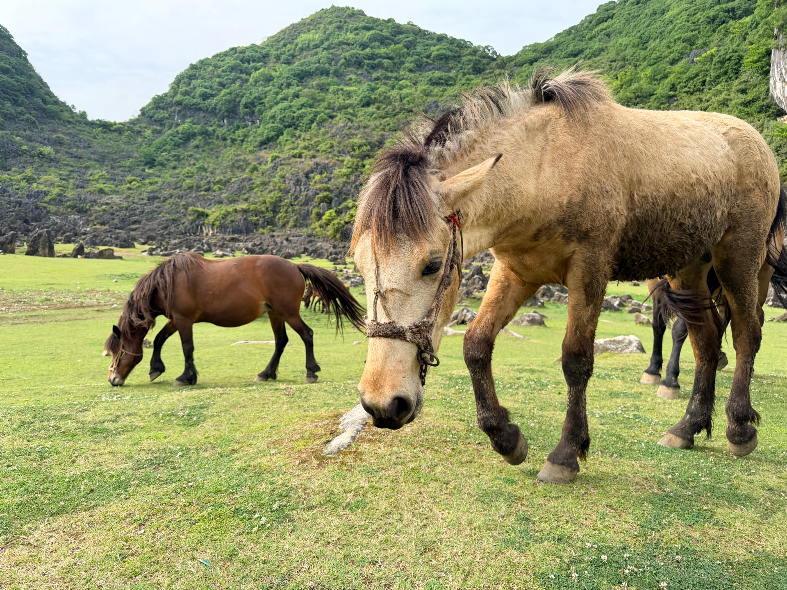
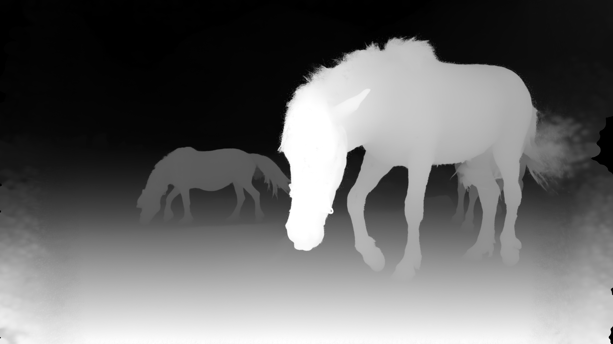

不是完整扫描
模型从一张图推断场景，没有见过物体背面。小视角运动更可靠，大幅绕后会暴露遮挡缺失。
用真实马匹照片走完完整链路：单图重建 3D 高斯场景，在网页里亲手走进去，再把一条摄影机轨迹渲染成视频。
一张照片没有真实的背面信息；模型只能根据大小、遮挡、透视和语义去预测可见场景的空间结构。


马匹、草地、山体与天空在图像中构成前后层次。
将相对远近映射到三维位置；遮挡处不可见的内容仍是未知的。
摄影机稍微移动时，近处位移更明显，产生运动视差。
SHARP 的马匹场景包含 1,179,648 个高斯。每个高斯不是硬边小球，而是一个具有位置、尺度、旋转、颜色与不透明度的柔性椭球。下面用少量合成高斯，把“空间形状 → 屏幕投影 → 透明混合”拆开观察。
先改变空间转向，观察投影面积；再调透明度和数量，观察重叠区域。
加载同一份 118 万高斯马匹 PLY，与下方自由探索共用渲染器，不重复占用模型内存。尺寸调整改变高斯的屏幕覆盖范围，不移动高斯中心；透明度倍率乘在模型原有 α 上。鼠标拖动和 WASD 仍可改变视角。
线框表示等密度轮廓，中心最浓，向外连续衰减；不是一个实心网格物体。
虚线是 1σ 等值线，不是裁切边界；椭圆外仍有逐渐减弱的贡献。
从后往前叠加：每层覆盖一部分背景。重叠区更不透明，前层颜色影响更大。
α(p) = 峰值不透明度 × exp(−½ dᵀ C⁻¹ d)结果 = 前层颜色 × α + 背景 × (1 − α)。本实验在线性 RGB 中混合，再编码为屏幕颜色；正式渲染还要处理透视、深度排序与性能优化。空间转向改变椭球面对屏幕的形状；画面内旋转只改变椭圆方向。透明度为 0 时只剩背景。反转顺序会改变颜色，但不会改变同一像素的累计不透明度。
这是实时浏览器 3D 高斯渲染，不是 360° 视频。鼠标拖动转向；W / S 沿镜头方向前后移动，A / D 左右平移。
模型约 63 MB、118 万高斯。点击后再加载，建议用桌面端 Chrome / Safari 和独立显卡或 Apple Silicon。
单图重建适合在原始拍摄点附近小范围探索。远离拍摄点后，遮挡后方缺少原图证据，出现模糊、拉伸或空洞是模型与输入信息的限制，不表示已有完整的 360° 场景。
与手动探索使用同一个场景；用锥形环绕同时展示水平与垂直视差，再沿连续闭合轨迹逐帧导出。
相机沿圆形轨迹移动，依次经过右、上、左、下，再回到右侧；始终朝向同一环绕点，保持地平线不滚转。视线形成半角 1.5° 的圆锥。
以主体为注视中心，让相机位置绕圆运动；水平、垂直视差共同呈现空间层次。
沿完整圆周取样，每帧更新位置与朝向，再投影高斯并混合成新视角画面。
300 帧覆盖一圈，不重复末尾首帧；闭合轨迹令循环衔接自然，输出 10 秒视频，无音频。
模型从一张图推断场景，没有见过物体背面。小视角运动更可靠，大幅绕后会暴露遮挡缺失。
原图之外的内容缺少证据。输出视频用安全裁切降低边缘空洞；这不等于修复了未知背景。
网页 PLY、深度预览和视频均来自马匹样例。实际耗时与画质依赖输入、设备、分辨率和轨迹。